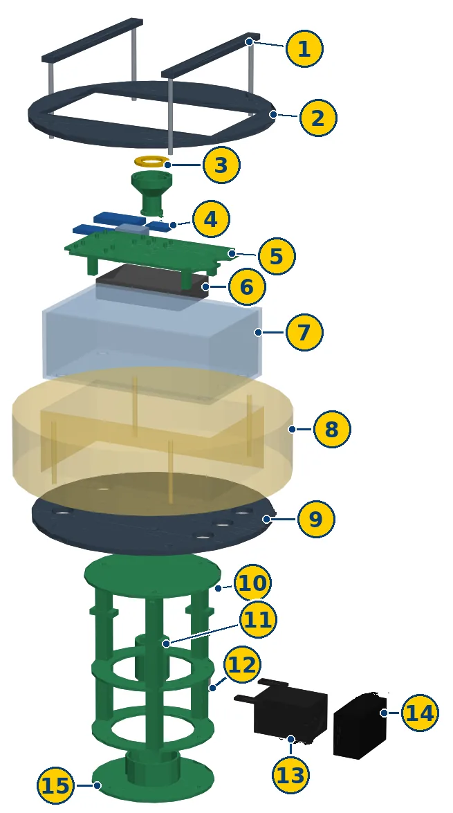
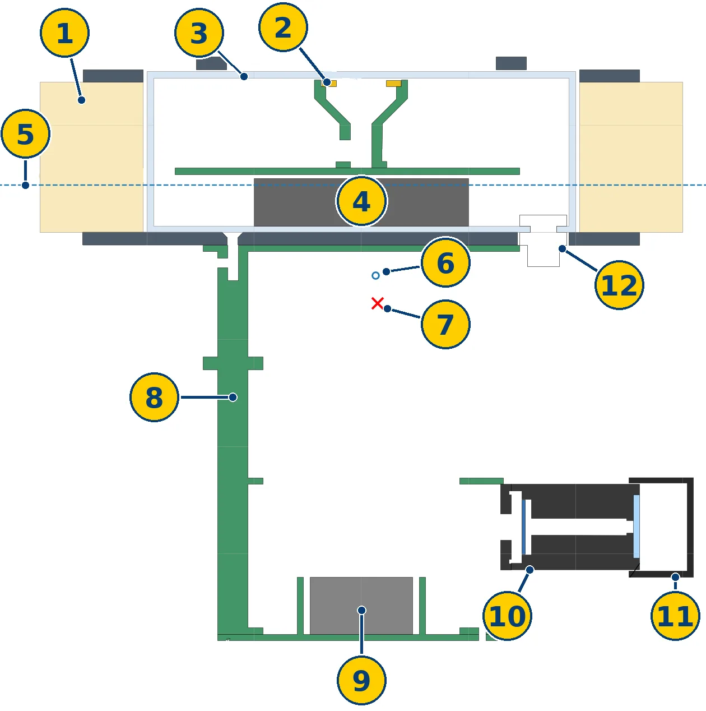
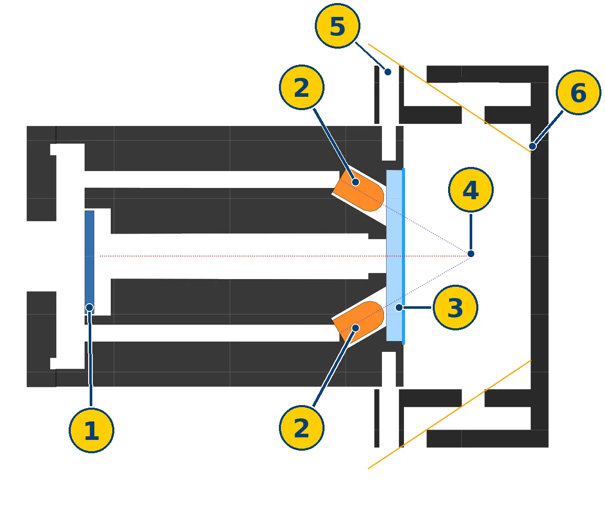

The problem: blue-green algae blooms
Blue-green algae are not really algae. They are tiny living things called cyanobacteria (say "sigh-AN-oh-bacteria"). Most lakes have a few of them, and that is normal.
A bloom happens when they grow out of control. That needs lots of nutrients (like fertilizer washing into the water), lots of sunlight, and warm, calm water.
Some blooms make toxins. They can make people sick, and they are especially dangerous for dogs that swim in them.
But not every bloom is toxic. New York's Department of Environmental Conservation (DEC) says even large blooms are not always harmful. You can't tell by looking, so the safe rule is: stay out of scummy or strange-colored water, and keep your dog out too.
Why is it hard to catch blooms early?
Today, checking a lake usually means taking a boat out, filling bottles with water, and sending them to a lab. That costs a lot of people, boats and lab work, so it doesn't happen very often. Each test is only a snapshot. A bloom can grow between visits, and nobody knows yet.
Our problem in one sentence: blooms in a small lake can make the water unsafe, and testing by hand is too slow and too rare to warn people early.
Why Lake Agawam?
Lake Agawam is a small lake in Southampton Village on Long Island. We picked it because:
- It has some of the worst blooms on Long Island. Dense blooms have been recorded there since 2003. In 2018 it had the densest growth of blue-green algae ever recorded in a Long Island water body.
- The county has warned people about it. Suffolk County says its cyanobacteria and toxin levels are very high.
- It is small and closed in, not an open bay. A buoy can watch the whole lake, and treating a bloom early is more realistic.
- Scientists already study it. Stony Brook University researchers and the DEC have worked there, so we can compare our ideas with theirs and ask experts questions.
Safety rule for our team: we never collect real bloom water. Lake Agawam's blooms can be toxic to people and pets. For tests we use safe powders from a health-food store instead (see "What's next").
How an expert's feedback changed our problem
Our project did not start at Lake Agawam. Talking to experts changed it twice.
-
Sept 17
We chose our topic: plankton and harmful algae blooms. Our first plan was about plankton in the ocean. Then we focused on brown tide in a Long Island bay (salt water). Brown tide is harmless to people, but it hurts shellfish like scallops and clams.
-
Oct 14
Expert call 1: a scientist from the harmful algal bloom program at the NY State Department of Environmental Conservation. She told us:
- The DEC's main bloom job is watching for blooms and telling the public. Testing by boat and lab is expensive and doesn't happen often.
- A buoy left in a small body of water could measure much more often.
- Make SpectraFloat do more than warn: monitor → predict → treat → keep monitoring. She called treatment a research direction, not a finished design, because dose, safety for wildlife, and permission all need research first.
-
Oct 15
We changed our problem. We moved from salt-water brown tide in a bay to fresh-water blue-green algae in a small lake: Lake Agawam. Our sensors got a new orange light to find blue-green algae (see below), and our AI started learning from lake data.
-
Oct 18
Expert call 2: a Columbia University engineering researcher on a team that builds a robot boat and a sensor buoy for lakes. She looked at our CAD model and said it was "a really good CAD". Her advice:
- Leave room for wires. "Wire management is like a beast."
- Stay low and wide, or a buoy tips over. Only the sensors need to be underwater.
- Seal every cable with a waterproof cable seal and run the wires through a tube.
- Running AI on the buoy uses a lot of battery. Her team sends data to a computer on shore and runs the AI there.
- Most boats and buoys only measure at the surface. Something that checks below the surface would be new.
-
Oct 22
The CAD design changed because of that feedback:
- A lift-out tray for the electronics, with a gap around every board for wires. The dry box is still about 85% empty space.
- Five waterproof cable seals (two are spares for later), each with a tube for the wires.
- A wide foam float ring with weights at the very bottom, so the buoy stays low and wide.
Still open: a second sensor deeper down, to check below the surface. We haven't added it yet.
Our solution: the SpectraFloat buoy
Monitor: the two-light trick
A cloudiness sensor alone can't tell algae from mud after a storm. So SpectraFloat shines lights into the water and looks for a glow:
- All algae glow red under blue light. Mud doesn't glow. So blue light tells algae apart from mud.
- Only blue-green algae have a pigment called phycocyanin, which soaks up orange light. So blue-green algae glow much more under an orange light than other algae do.
- Two lights, one sensor: mud, ordinary green algae, and harmful blue-green algae all look different.
The buoy also measures water temperature, because blue-green blooms come with warm, calm summer water. A warning light on top turns green, yellow or red, and a phone page shows the readings. The real warning about toxins still comes from a lab test; the buoy's job is to say "test here, now" sooner.
Inside the buoy


- Clamp bars that hold the lid on
- Top frame
- Warning light ring (green / yellow / red) on its holder
- Small computer and sensor boards
- Lift-out electronics tray
- Battery
- Waterproof dry box with a clear lid
- Foam float ring
- Bottom plate with waterproof cable seals
- Sensor cage
- Cloudiness sensor
- Temperature sensor
- Algae light sensor (blue and orange lights + light sensor)
- Dark hood that blocks sunlight
- Weights that keep it upright
Will it float upright?


- Foam float ring
- Warning light, just under the clear lid
- Waterproof dry box
- Battery
- Waterline: where the water should come up to
- Float point (where the water pushes up)
- Heavy point (the buoy's center of weight)
- Sensor cage
- Weights at the very bottom
- Algae light sensor
- Dark hood
- Waterproof cable seal
The heavy point (7) sits well below the float point (6), like the weight at the bottom of a punching toy, so the buoy should pop back up if a wave tips it. The CAD model says the buoy weighs about 2.4 kg and that the float ring should sit about 2 cm deep in the water. These are computer numbers; we still have to check them with a real float test.
How the light sensor keeps sunlight out


- Light sensor (it "sees" the red glow)
- The two lights, one blue and one orange (both drawn orange here)
- Clear window
- Sample spot: both lights shine here, and the sensor looks here (dotted lines)
- Water comes in through slots in the side walls
- Solid orange line: the flattest ray of sunlight that can sneak in. It hits the back wall, not the window.
Sunlight has red light in it too, which would look like algae glow. So the water takes a zigzag path into the hood, and sunlight can't follow it. The code also takes a reading with both lights off and subtracts it.
Treat (an idea we are researching, not building yet)
The DEC scientist asked: could a buoy help stop a bloom early? Our plan for that is a human in the loop:
- The AI says bloom risk is high.
- A person gets a message on a phone: "Approve dose?"
- Only if the person taps yes, a small pump runs for a set time, with a maximum dose in the code.
- The buoy keeps measuring: did the blue-green glow go down?
Our demo will only ever pump plain or colored water, never real chemicals. Treating a real lake in New York needs permission from the state. We are researching options like hydrogen peroxide (a Stony Brook University study tested it on water from four New York lakes) and ultrasound, and the real long-term fix: less fertilizer and septic waste reaching the lake.
What already exists, and what we want to do better
| Existing solution | What it does |
|---|---|
| Boat trips and lab tests | Accurate, but costly and not very often |
| DEC's bloom map | Tells the public where blooms were reported or confirmed |
| Buoys on Lake Agawam (2021) | The DEC put three solar-powered buoys on the lake that monitor water quality and send out ultrasound |
| A Columbia University team | A robot boat that collects water samples, plus a sensor buoy |
| A Cornell University team | A large buoy that collects data, aims to predict blooms, and works as a weather station |
What we are aiming for with SpectraFloat: it predicts blooms days ahead, tells harmful blue-green algae apart from other algae and from mud, costs much less (our goal is a core build under about $300), and only treats with a person's approval, then checks if it worked.
The AI bloom forecast
The question: can a computer warn us about a blue-green algae bloom before it happens?
What data it learns from
Lake Agawam's own sensor data isn't public (we plan to ask for it). So for now the model practices on the best public data we found: a US Geological Survey sensor in Upper Klamath Lake, Oregon. Like Lake Agawam, that lake is shallow, full of nutrients, and gets a big blue-green bloom every summer. The sensor measures the blue-green glow (phycocyanin, the same pigment our orange light looks for) and water temperature every day from May to October, 2011–2026 (2020 and 2023 are missing). We added free weather history for the same days: sun, rain and wind.
What it predicts
Every summer day becomes one row with 7 clues: water temperature this week, whether the water is warming up, algae glow today, how much the glow changed in 3 days, and sun, rain and wind in the last 3 days. The answer it learns: will the glow go above our bloom level in the next 5 days? (We set the bloom level at about 10 times the early-summer glow.)
How sure is it?
We hid the summer of 2025 from the models and tested them on it, like a brand-new test. In 2025, 64 days had a bloom coming.
Bloom days caught in the 2025 test, out of 64. Gray = simple rules, blue = AI models.
- "Always say no" was right 62% of the time but caught zero blooms. That's why we count blooms caught and false alarms, not just accuracy.
- The AI models beat the simple rule. The best one caught 53 of 64 bloom days, with 9 false alarms.
- Real early warnings: on 37 days a bloom was coming while the glow was still low. The rule "warn if it's high today" can never warn early. The random forest warned on 26 of those days.
- Testing every summer the same way (14 summers, one at a time): the models were right 88–89% of the time and caught 81–87% of bloom days. The cost: about 2.5 to 3 times more false alarms than the simple rule. More warnings means fewer missed blooms but more false alarms. We have to choose that trade on purpose.
- The best clues were algae glow today, how fast it's growing, water temperature and sun. SpectraFloat measures the first three itself.
- We also tried Long Island salt water with the same method. There the models barely beat the simple rule. That's more evidence that a lake was a good choice.
The small tree (only 3 questions deep) turns into a few plain "if" statements that can run on the buoy's tiny computer. The bigger models would run on a laptop on shore, as the Columbia researcher suggested.
The limits (we tell judges these):
- It's not Lake Agawam yet. Upper Klamath Lake is in Oregon and much bigger. Agawam's blooms may start differently.
- Glow is not toxin. The glow shows blue-green algae are there, not whether they are making toxins.
- Different sensors. The government sensor's numbers are on a different scale than our orange light. We must calibrate our sensor before using the model on the buoy.
- Small data. 14 summers from one spot, two missing years, and no data about nutrients like phosphorus and nitrogen.
Our coach built a starter version of this forecast notebook. Next, we redo each step ourselves and try to get Lake Agawam's own data.
Where we are now
Done
- Problem research and the switch to Lake Agawam
- Two expert calls (Oct 14 and Oct 18)
- The whole buoy designed in CAD, with computer checks that the parts fit and that it should float upright (Oct 22)
- A first AI bloom forecast, tested on real lake data
Not done yet
- Nothing is printed or built yet
- No sensor tests yet
- No leak test, float test or real-water test yet
- The deeper second sensor is only an idea
What's next (our plan)
- Light sensor test: blue and orange lights with the light sensor in a dark cup. We test spirulina powder (a real blue-green alga, safe to use) against chlorella powder (a green alga) and muddy water.
- Print, cut and build the parts, then a leak test: the empty box under water for 30 minutes with a paper towel inside.
- Float and tilt test: does it float level and pop back up?
- Code: the green / yellow / red alert and the phone page, then a full "bloom" demo.
- Mud test: muddy water should show yellow, not a red bloom alarm.
- Share it again with the experts. Once it passes the leak test, the Columbia team offered to test it with their boat on a pond in New York City.
- Ask for Lake Agawam's own sensor data so the AI can learn from our real lake.
Our next event is the NYC FIRST Founders Edition Qualifier 2 on January 10, 2027. We'll update this page as we build and test.
Research sources
- NY State DEC: Harmful algal blooms (what cyanobacteria are, what causes blooms, why dogs are at risk, not every bloom is toxic)
- Suffolk County: Cyanobacteria bloom in Agawam Lake
- 27east: Crisis at Lake Agawam (blooms since 2003, the 2018 record)
- 27east: New device deployed to combat algal blooms in Lake Agawam (the 2021 buoys)
- Stony Brook University study (2020): hydrogen peroxide tested on water from four New York lakes
- A whole-lake hydrogen peroxide trial in the Netherlands (2012): study page
- University of Maine (2013): a low-cost Arduino algae sensor using a blue light, the same idea our light sensor uses
- US Geological Survey: daily lake sensor data from Upper Klamath Lake, Oregon (site 422305121553803) and Hog Island Channel, Long Island (site 01311143)
- Open-Meteo weather history
- Expert calls: a scientist from the NY State DEC harmful algal bloom program (Oct 14, 2026) and a Columbia University engineering researcher (Oct 18, 2026)